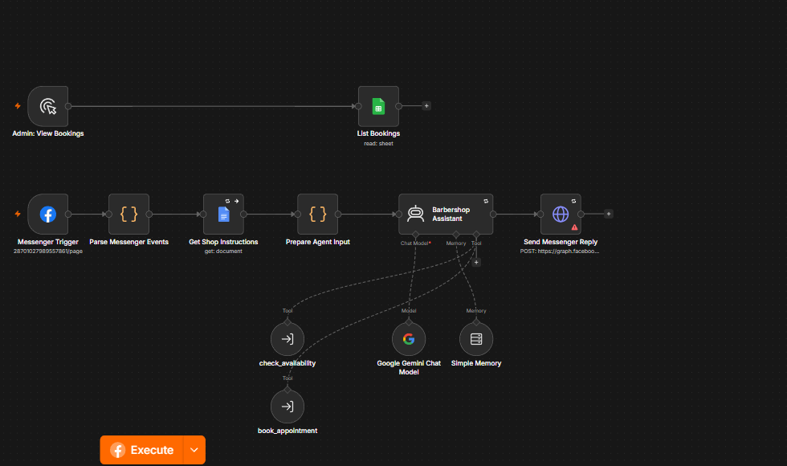
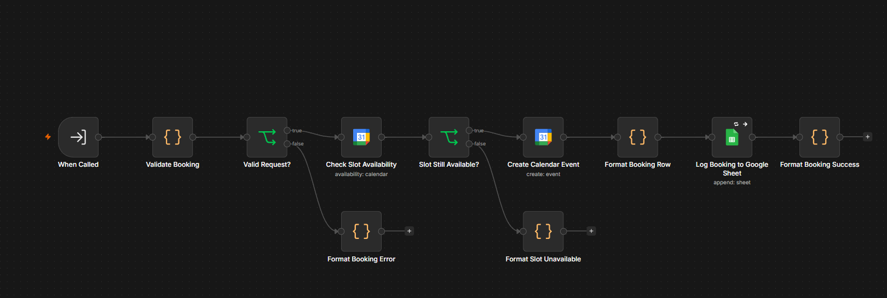
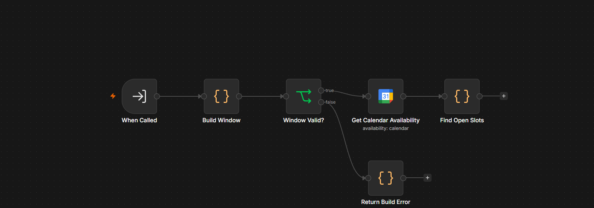

project overview
An AI customer support and booking prototype for barbershops. The main assistant answers service questions in English, Tagalog, or Taglish, keeps conversation context, and calls two sub-workflows to check open slots and create a booking.
The assistant runs as an n8n workflow. A Messenger message passes through the main workflow, which loads the shop instructions from Google Docs, calls Google Gemini with conversation memory, and can invoke two tools: one checks calendar availability, the other books an appointment.
The booking sub-workflow validates the request, checks the slot again, creates a Google Calendar event, and logs the booking in Google Sheets. The availability sub-workflow builds a time window and reads open slots from the calendar.
The project is a working prototype. Appointment changes, cancellations, and reminders are not implemented.
problem statement
Barbershop staff answer the same questions repeatedly and coordinate appointments by hand. The shop needed a way to answer common questions quickly, check real availability, and keep the booking record in one place.
objectives
- Answer common barbershop questions in English, Tagalog, and Taglish.
- Keep the assistant’s instructions and shop information in a Google Doc.
- Maintain conversation context with a memory node.
- Check open appointment slots against Google Calendar.
- Create a booking and log it in Google Sheets.
- Send the assistant’s reply back through Messenger.
my role and contributions
- design
- Designed the conversation flow, the knowledge base structure, and the boundary between the assistant and the two booking sub-workflows.
- prompt
- Wrote and refined the instructions for the model, including the language mix, the shop details, and the limits of the answers.
- integration
- Connected Facebook Messenger, n8n, Google Gemini, Google Docs, Google Sheets, and Google Calendar.
- testing
- Tested the reply flow, the availability check, the booking path, and the conversation log by hand.
AI-assisted development tools were used for parts of the implementation. I reviewed the workflow, tested the reply and booking paths, and refined the result rather than treating the output as finished.
technologies used
| group | tools |
|---|---|
| channel | Facebook Messenger |
| automation | n8n |
| model | Google Gemini |
| knowledge | Google Docs |
| records | Google Sheets, Google Calendar |
main features
- Multilingual repliesAnswers in English, Tagalog, and Taglish.
- Shop knowledge baseUses a Google Docs document for the assistant’s instructions and shop information.
- Conversation memoryKeeps the exchange coherent with a memory node in the main workflow.
- Availability checkingCalls a sub-workflow that reads open slots from Google Calendar.
- Appointment bookingCalls a sub-workflow that validates the request, creates a calendar event, and logs the booking.
- Booking recordKeeps each confirmed appointment in Google Sheets.
- Admin booking listA separate branch lists bookings from the Google Sheets record.
planned, not implemented
- Appointment changes and cancellations.
- Automated appointment reminders.
- Rescheduling from the Messenger conversation.
workflow and system architecture
The booking sub-workflow validates the request, checks the slot, creates a Google Calendar event, and appends the booking to Google Sheets.
screens and demonstrations
-

main workflowThe main assistant: Messenger trigger, shop instructions, Gemini, conversation memory, and the availability and booking tools.
-

sub-workflowThe booking sub-workflow: validate the request, re-check the slot, create the calendar event, and log the booking.
-

sub-workflowThe availability sub-workflow: build a time window and read open slots from Google Calendar.


challenges and solutions
| the constraint | the response |
|---|---|
| Customers write in English, Tagalog, and Taglish, sometimes in the same message. | The instructions and the knowledge base describe the language mix, and the reply stays in the customer’s register. |
| A booking can collide if the assistant only talks about availability. | The availability sub-workflow reads the calendar, and the booking sub-workflow re-checks the slot before creating the event. |
| A chat is hard to review after it ends. | The main workflow keeps conversation memory, and confirmed bookings are logged in Google Sheets. |
project status
Working prototype. The Messenger assistant, availability check, and booking sub-workflows are built in n8n. Appointment changes, cancellations, and reminders are planned, not implemented.
No booking volume, customer count, or client deployment is claimed on this page.